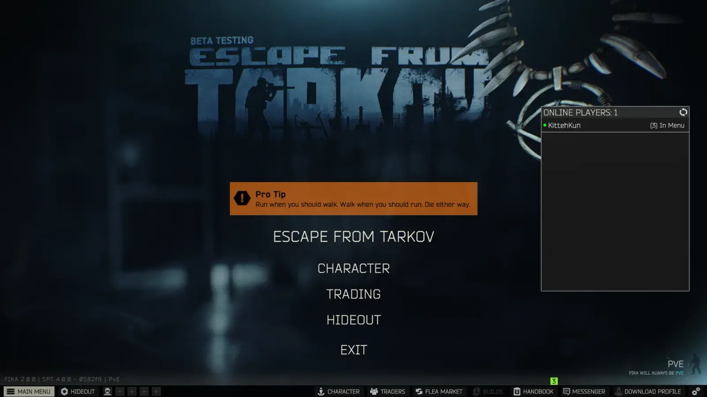
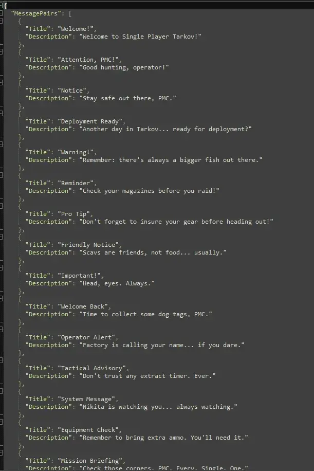

Mod
Welcome Messages
- Downloads
- 9,327
- Favourites
- 17
- Mod lists
- 24
Welcome Messages
This mod replaces the Beta warning message with a custom welcome message pulled from a collection of messages, each with a title and description. A new message is chosen at random every time the server starts, giving your SPT experience a little personality.
Features
- Replaces the default Beta warning message on server start
- 50+ messages (title + description pairs)
- Messages loaded from
appsettings.json - Random message chosen each server launch
Installation
- Download the mod and extract the folder.
- Move
kitteh-welcome-messagesinto your mods directory:<YOUR SPT INSTALL>/SPT/user/mods - Start your SPTarkov server, your new welcome message will appear.

Customization
- Open the
appsettings.jsonfile with a text editor located inkitteh-welcome-messages/config - You edit, add, or remove entries as you see fit.

Uninstallation
- Stop the server if it’s running.
- Delete the
kitteh-welcome-messagesfolder from the mods directory. - Restart the server, the default Beta warning returns.
Version
1.0.0
SPT ~4.0.0
Fika: unknown
9,327 downloads10.0 KB
Welcome Messages
This mod replaces the Beta warning message with a custom welcome message pulled from a collection of messages, each with a title and description. A new message is chosen at random every time the server starts, giving your SPT experience a little personality.
Features
- Replaces the default Beta warning message on server start
- 50+ messages (title + description pairs)
- Messages loaded from
appsettings.json - Random message chosen each server launch
Installation
- Download the mod and extract the folder.
- Move
kitteh-welcome-messagesinto your mods directory:<YOUR SPT INSTALL>/SPT/user/mods - Start your SPTarkov server, your new welcome message will appear.
Customization
- Open the
appsettings.jsonfile with a text editor located inkitteh-welcome-messages/config - You edit, add, or remove entries as you see fit.
Uninstallation
- Stop the server if it’s running.
- Delete the
kitteh-welcome-messagesfolder from the mods directory. - Restart the server, the default Beta warning returns.
VirusTotal: report 1